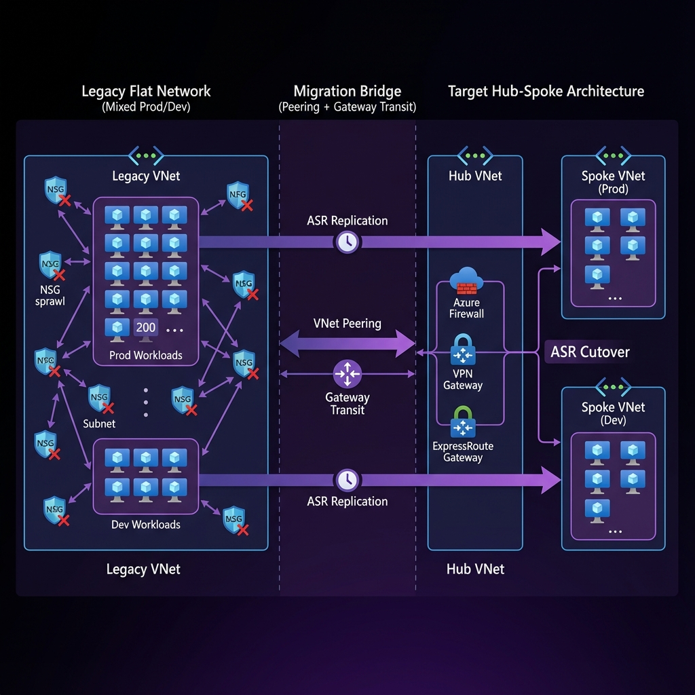
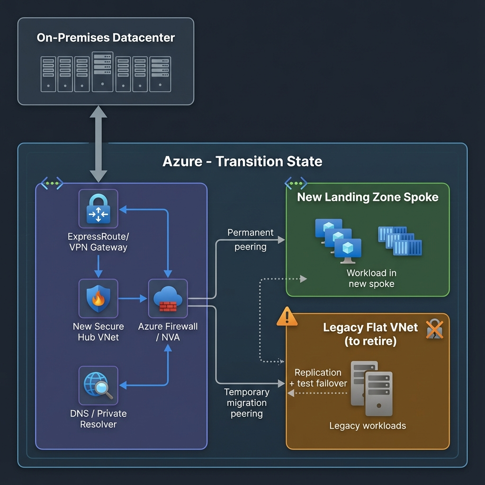

The Truth
Landing zones are clean on paper. Brownfield migrations are not.
If you try to "fix" a flat production network in-place, you will break something. The safe move is a controlled transition where old and new coexist for a while, with clear exit criteria and rollback.
This article is a practical playbook for moving from a legacy, flat Azure environment to an Azure Landing Zone style hub-and-spoke without turning production into a change-failure festival.
TL;DR (what actually works)
- Build the new hub first (connectivity, security, DNS). Do not touch workloads yet.
- Connect legacy to the new hub using peering + gateway transit (temporary bridge).
- Migrate workloads in waves into new spokes. Validate each wave.
- Cut DNS over with low TTL. Keep rollback simple.
- Decommission legacy only after you have stable operations and monitoring.
Scenario (what this looks like in real life)
Typical brownfield starting point:
- 200+ VMs in a single VNet (often /16)
- Prod and Dev mixed
- No central egress control, firewall rules scattered across NSGs
- "Temporary" routes, NVAs, and exceptions that became permanent
- Multiple teams deploying directly in portal, no guardrails
Target end state:
- Hub-and-spoke (or vWAN) with centralized security controls
- Clear subscription and management group structure
- Standardized DNS and private connectivity pattern
- Repeatable landing zone deployment path (portal accelerator, Bicep, or Terraform)
What to decide first (don't skip this)
1) Hub-and-spoke vs Virtual WAN
- Hub-and-spoke is simpler if you have one region and a smaller network team.
- vWAN is strong when you have many branches, frequent acquisitions, or lots of VPN/SD-WAN integration.
Pick one early. Switching later is expensive.
2) Where NAT belongs (overlapping IPs)
If overlapping address spaces exist, decide which control point owns translation:
- VPN Gateway NAT (for S2S scenarios where it's supported)
- vWAN NAT rules (if you're using Virtual WAN)
- Firewall-based NAT (only when it fits your routing and security model)
Do not confuse NAT Gateway (outbound SNAT for internet egress) with network-to-network address translation.
3) DNS ownership
Brownfield migrations fail more often due to DNS than compute.
Decide:
- Where private DNS zones live (usually hub subscription)
- How on-prem resolves Azure private endpoints (Private DNS Resolver patterns)
- How you will switch records during cutover (TTL plan and ownership)
Transition Strategy (the controlled bridge)
1) Migration bridge (legacy behaves like a temporary spoke)
Goal: Keep connectivity stable while you build the new platform and move workloads gradually.
Approach:
- Create the new hub VNet with your chosen connectivity (ER/VPN/vWAN) and security controls.
- Create temporary peering between:
- Legacy VNet (old flat world)
- New hub VNet (new world)
Key configuration "gotchas":
- Gateway transit is asymmetric. One checkbox wrong and routes break.
- Ensure the correct combination of:
- "Allow gateway transit" on hub side
- "Use remote gateways" on legacy side (if legacy must consume hub gateway)
- "Allow forwarded traffic" when required for NVAs / firewall patterns
Outcome:
On-prem can continue to reach legacy workloads while the hub becomes the new network control plane.
2) Overlapping IPs (the part everyone underestimates)
If you have IP overlap due to M&A, partner networks, or bad historical planning:
- Best outcome: re-IP (slow, expensive, but clean)
- Pragmatic outcome: NAT as a temporary bridge while you re-IP over time
Practical guidance:
- Keep NAT rules minimal and documented (treat them like debt with an expiry date).
- Prefer one-to-one NAT where possible. Avoid random many-to-one mapping for business-critical paths.
- Validate whether your scenario is supported by the gateway SKU and connection type.
3) Cutover (treat migration like DR)
For wave-based workload moves, you want a migration method that supports:
- repeatable testing
- controlled failover
- fast rollback
A pattern that works well in brownfield:
- Use replication + test failover for validation
- Use planned failover during cutover windows
- Keep rollback as "fail back" or "power on old" until you reach confidence gates
Note: Many teams now use Azure Migrate for migration. If you already use Site Recovery patterns, keep it disciplined and test-driven. The point is the methodology: test failovers before production cutover, every time.
Migration plan (phases + exit criteria)
Phase 0: Pre-flight (inventory + blast radius)
Checklist:
- Identify critical apps and dependencies (DNS, AD, DB, middleware)
- Capture current routing: UDRs, NVAs, peering, BGP, forced tunneling
- Confirm who owns DNS and who can change records
- Freeze risky changes in legacy during platform build
Exit criteria:
- You can draw the current network, including UDRs and next hops.
- You have a wave plan (Wave 0 pilot, Wave 1, Wave 2).
Phase 1: Build the new hub (don't migrate yet)
Checklist:
- Hub VNet, firewall pattern, routing model
- ER/VPN/vWAN connectivity design in place
- Private DNS strategy and resolver plan
- Baseline policies (regions, public PaaS access, tagging, identity guardrails)
Exit criteria:
- Hub has stable connectivity to on-prem.
- DNS resolution works for hub-controlled services.
- You can deploy a test spoke and reach on-prem.
Phase 2: Connect legacy to hub (temporary bridge)
Checklist:
- Peering configured with correct transit settings
- Route validation performed (effective routes, next hop verification)
- Firewall rules and UDRs updated to avoid black holes
Exit criteria:
- On-prem can reach both:
- legacy workloads (unchanged)
- new test spoke workloads
Phase 3: Migrate workloads in waves (repeatable playbook)
For each wave:
- Create new spoke for the wave/app group
- Validate network + DNS + identity before moving compute
- Replicate, test failover, validate app, then cutover
Exit criteria:
- App owners sign off after a test failover.
- Cutover plan and rollback are written and rehearsed.
Phase 4: Cut DNS (small changes, big consequences)
Checklist:
- Lower TTL at least 24 hours before cutover
- Pre-create records where possible
- Validate private DNS zones vs on-prem DNS forwarding
Exit criteria:
- DNS cutover is predictable and reversible.
Phase 5: Decommission legacy (after you prove operations)
Checklist:
- Confirm no remaining dependencies (routes, DNS records, peering)
- Remove temporary peerings
- Remove old NVAs and unused public IPs
- Finalize policy enforcement and baseline monitoring
Exit criteria:
- No traffic uses legacy VNet for 2+ weeks (measured, not guessed).
Common failure modes (and how to avoid them)
1) Hairpin routing
Symptoms:
- East-west traffic goes up to firewall and back down unintentionally.
Impact:
- latency, cost, weird intermittent timeouts
Fix:
- Make routing intentional. Document when you want forced tunneling vs when you allow spoke-to-spoke direct.
2) "It worked yesterday" routing black holes
Root causes:
- Legacy UDRs pointing to old NVAs
- Asymmetric gateway transit settings
- BGP propagation misunderstood
Fix:
- Verify with effective routes and next hop checks before every cutover.
3) DNS drift
Symptoms:
- App works from one subnet, fails from another
- Private endpoints resolve differently across VNets
Fix:
- Centralize private DNS zones. Standardize resolver strategy. Don't let each team invent DNS.
4) Legacy licenses tied to MAC / hardware IDs
Symptoms:
- App fails after redeploy
Fix:
- Identify these apps early. Plan vendor re-hosting steps, not "surprise calls" during cutover.
Diagram (Azure icons)
Transition State Diagram
Operational Checklists
Pre-cutover (per wave)
- [ ] Wave scope signed off (apps, servers, owners)
- [ ] Firewall + UDR reviewed and peer-reviewed
- [ ] Effective routes validated for key subnets
- [ ] DNS TTL lowered, records staged
- [ ] Test failover executed, app validation complete
- [ ] Rollback steps documented, owners assigned
Cutover day
- [ ] Change window confirmed + comms sent
- [ ] Stop writes (if needed), final sync completed
- [ ] Planned failover executed
- [ ] DNS switched
- [ ] Smoke tests + business tests pass
- [ ] Monitoring confirms stable traffic and error rates
Post-cutover
- [ ] Keep legacy available for rollback until confidence gate
- [ ] Remove temporary exceptions only after stability proven
- [ ] Update CMDB and runbooks
References
Microsoft Learn
- Azure Landing Zone
- Landing Zone Implementation Options
- Hub-Spoke Network Topology
- Virtual Network Peering Overview
- VPN Gateway Peering Gateway Transit
- Troubleshoot Peering Issues
- Connection Troubleshoot Overview
- Diagnose Network Routing Problem
- VPN Gateway NAT Overview
- VPN Gateway NAT How-To
- Virtual WAN NAT Rules
- Azure Site Recovery Overview
- Recovery Plan Overview
- Site Recovery Test Failover
- Failover Failback Overview
- Azure Migrate Overview
Microsoft Blogs
- Azure Landing Zones Conceptual Architecture
- ALZ Accelerators for Bicep and Terraform
- Azure AI Landing Zones with Terraform
- Azure Landing Zones Policy Refresh Q2 FY25
GitHub
- Azure Enterprise-Scale
- Azure Landing Zones Bicep
- Terraform CAF Enterprise Scale
- ALZ Terraform Accelerator
- Enterprise Azure Policy as Code
- Terraform Platform Landing Zone
YouTube (Microsoft)
- Azure Landing Zones Overview
- Azure Landing Zones Deep Dive
- Learn Live: Azure Optimization
- Azure Landing Zones Deployment